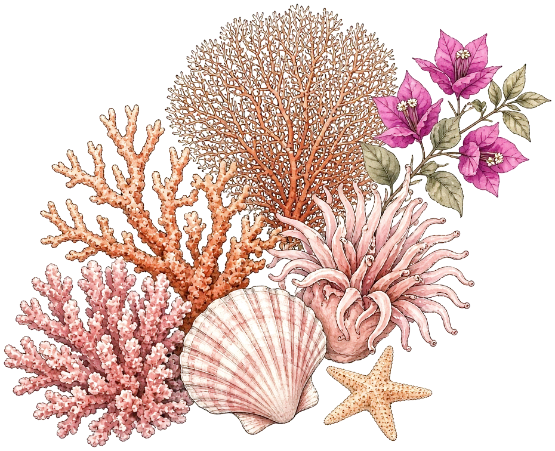
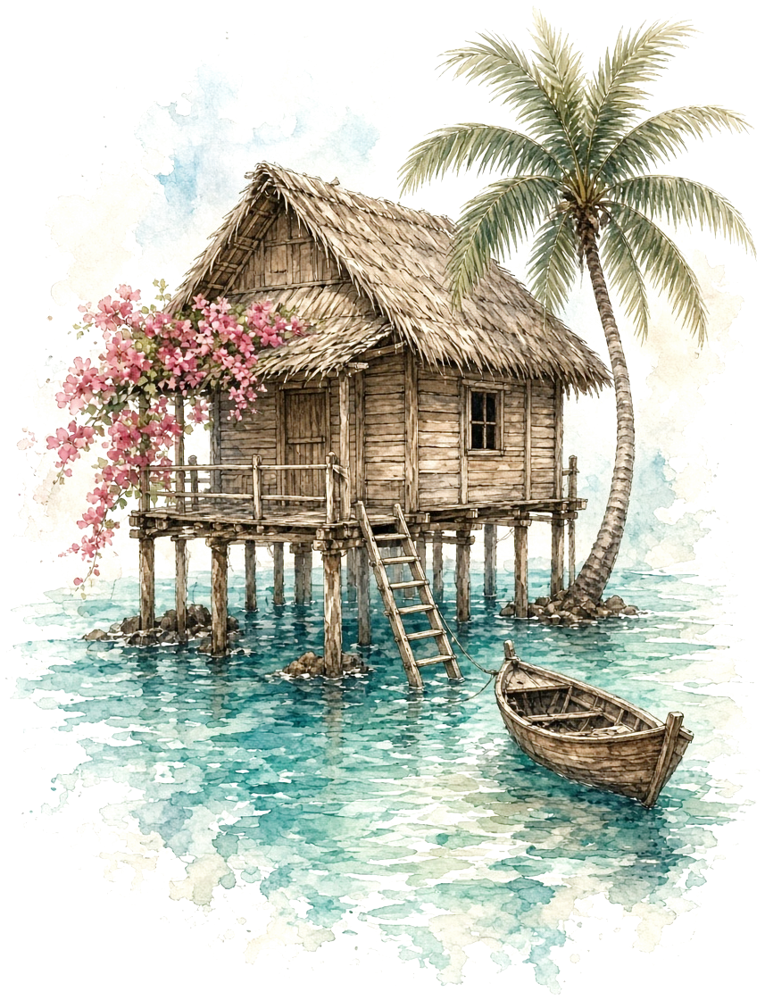
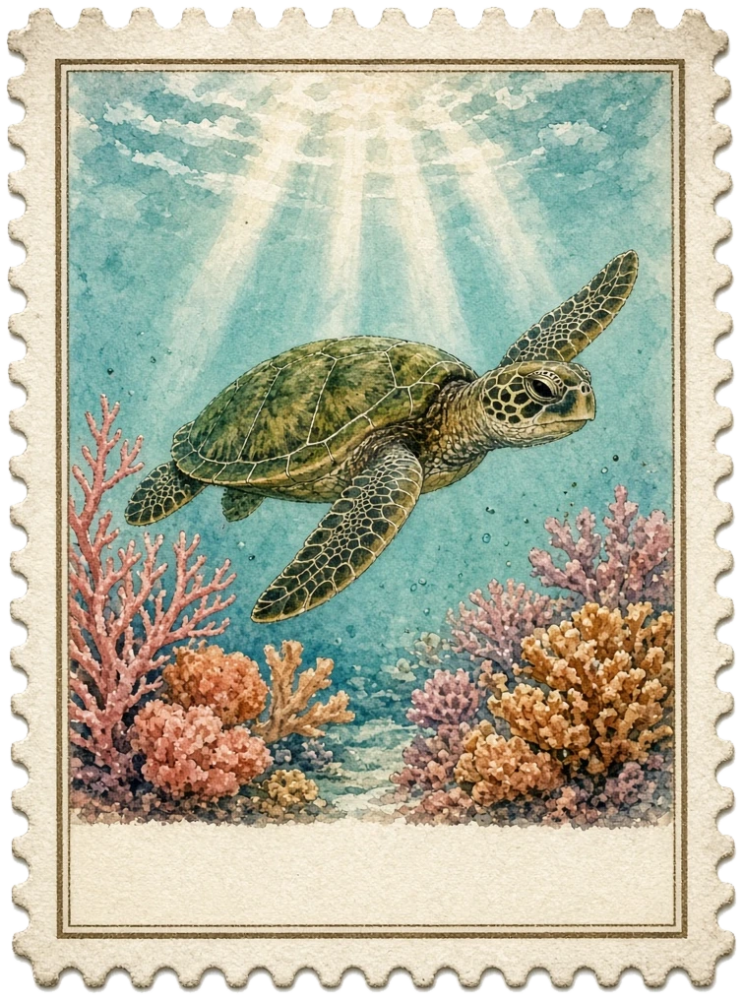
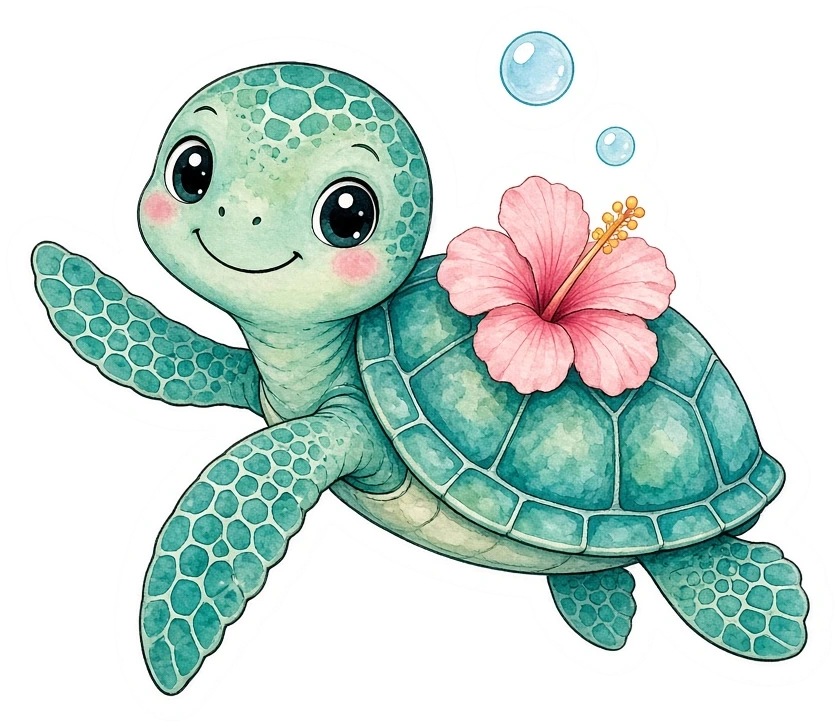

TRAVEL JOURNAL2026
— 10 —


the flower jetty

LOG — DAY 2
Walked the jetty three times just to look down at the water.
· pink flowers on every rail
· turtles under the jetty
· salt on everything
· turtles under the jetty
· salt on everything

— 11 —



blue, then bluer

MALAYSIA50 sen

FIG. 03 — STILT VILLAGE